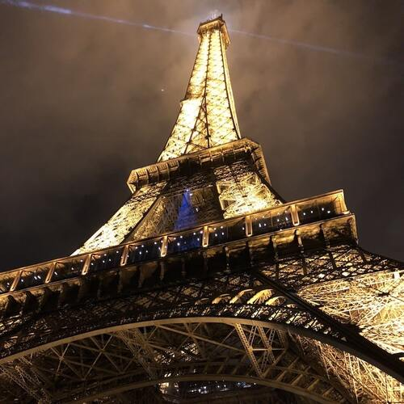
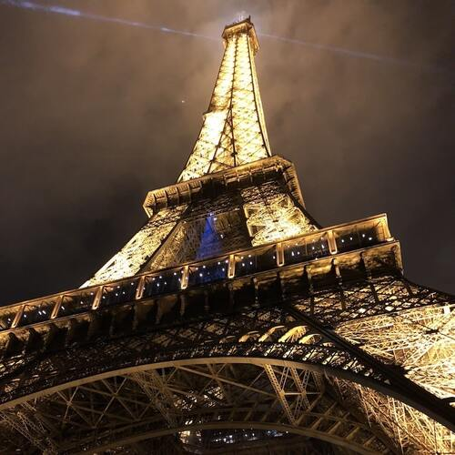
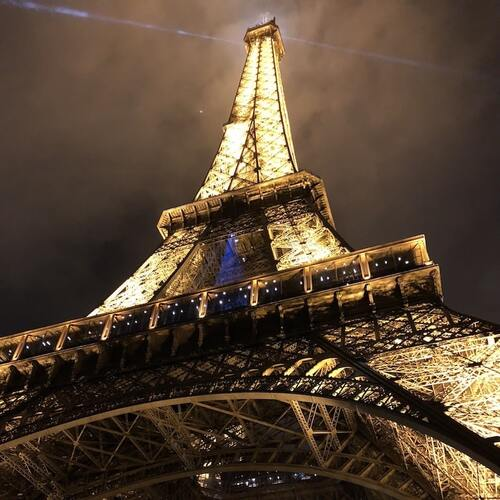
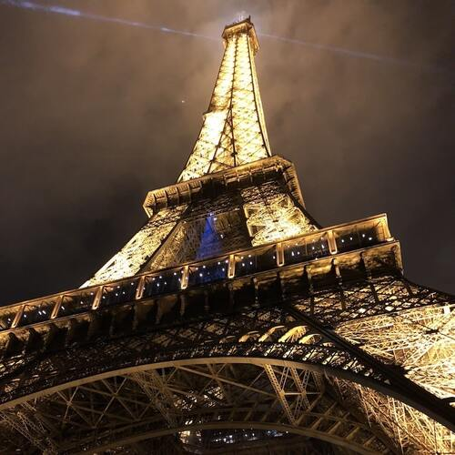

Hi!
I'm David
Web Developer in process
De operario a desarrollador.
Soy David de la Fuente Gómez de Barcelona, concretamente de un pequeño pueblo llamado Montmeló, muy conocido para los amantes del motor. Nací en el 1990 y soy un neócito de la programación, ya que recientemente decidí encaminar mi vida profesional al sector que siempre me había llamado al atención desde pequeño, y al que que por cosas de la vida nunca pude formarme. He sido operario de CNC en el sector de la automoción durante 10 años, y en la recta final tomé la decisión de retomar mis estudios e ir a por lo que realmente quería. Estuve trabajando y estudiando el primer año y medio y al fin me decidí a dejar mi trabajo para centrarme 100% en mi nuevo proyecto. Y aquí estoy, a mis 33 años, con mi propia página web dónde mostrar al mundo, un poquito más de mí, mis inquietudes y poco a poco cumpliendo un sueño.


Experiencias y habilidades.
Acabo de realizar mis prácticas FCT en la empresa Novaigrup del Vallès Oriental.
Han sido cerca de 4 meses en los que he vivido una gran experiencia, de la que
he podido aprender mucho a nivel técnico, tanto FrontEnd y BackEnd.
No puedo mostrar los proyectos en esta web por temas de privacidad, pero explicaré
brevemente los proyectos que realicé:
- CRUD realizado en PHP con el Framework propio de la empresa
- Diágnostico de salud financiera desarrollado en
React
- Promo real de la empresa Purina siguiendo el patrón
MVC
- I+D sobre un problema derivado de Landing Pages (caso
real)
- Creación de API y BBDD para Landing Pages centralizadas
(solución punto
anterior)
En el apartado proyectos explico en
detalle las funciones de
estas tareas.
Estudios.
Estoy cursando un CFGS de Desarrollo de aplicaciones web.Organizé el curso en 3 años
debido
a mi situación laboral en aquel momento y ahora mismo estoy
en el tercer año, con el 90% del curso realizado.
Me falta para el curso 2023-2024:
- M7 Desarrollo web en entorno servidor (primer semestre)
- Proyecto de final de curso (segundo semestre)
Me espera un año bastante ligero en cuanto a carga de estudios por lo que no supone
ningún problema en futuros proyectos.
Un poco más sobre mí.
Mas allá de la programación soy una persona activa, amante de la
naturaleza.
Disfruto del mundo de las dos ruedas siempre que puedo y me gusta leer un buen libro
casi tanto como viajar, uno de mis grandes vicios.
El trabajo en equipo me apasiona, la posibilidad que otros te brindan
al
esdcucharles y estar en una dinámica de trabajo conjunta,
adquiriendo nuevas aptitudes a diario, y aportando siempre qeu sea posible, creo que
es uno de los motivos por los que este sector tanto me gusta.


 

Acabo de realizar mis prácticas FCT en la empresa Novaigrup del Vallès Oriental. Han sido cerca de 4 meses en los que he vivido una gran experiencia, de la que he podido aprender mucho a nivel técnico, tanto FrontEnd y BackEnd. No puedo mostrar los proyectos en esta web por temas de privacidad, pero explicaré brevemente los proyectos que realicé:
- CRUD realizado en PHP con el Framework propio de la empresa
- Diágnostico de salud financiera desarrollado en React
- Promo real de la empresa Purina siguiendo el patrón MVC
- I+D sobre un problema derivado de Landing Pages (caso real)
- Creación de API y BBDD para Landing Pages centralizadas (solución punto anterior)
En el apartado proyectos explico en detalle las funciones de estas tareas.
Estoy cursando un CFGS de Desarrollo de aplicaciones web.Organizé el curso en 3 años debido a mi situación laboral en aquel momento y ahora mismo estoy en el tercer año, con el 90% del curso realizado. Me falta para el curso 2023-2024:
- M7 Desarrollo web en entorno servidor (primer semestre)
- Proyecto de final de curso (segundo semestre)
Me espera un año bastante ligero en cuanto a carga de estudios por lo que no supone ningún problema en futuros proyectos.
Un poco más sobre mí.
Mas allá de la programación soy una persona activa, amante de la
naturaleza.
Disfruto del mundo de las dos ruedas siempre que puedo y me gusta leer un buen libro
casi tanto como viajar, uno de mis grandes vicios.
El trabajo en equipo me apasiona, la posibilidad que otros te brindan
al
esdcucharles y estar en una dinámica de trabajo conjunta,
adquiriendo nuevas aptitudes a diario, y aportando siempre qeu sea posible, creo que
es uno de los motivos por los que este sector tanto me gusta.

Mas allá de la programación soy una persona activa, amante de la naturaleza. Disfruto del mundo de las dos ruedas siempre que puedo y me gusta leer un buen libro casi tanto como viajar, uno de mis grandes vicios. El trabajo en equipo me apasiona, la posibilidad que otros te brindan al esdcucharles y estar en una dinámica de trabajo conjunta, adquiriendo nuevas aptitudes a diario, y aportando siempre qeu sea posible, creo que es uno de los motivos por los que este sector tanto me gusta.
